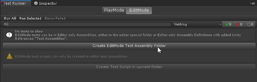
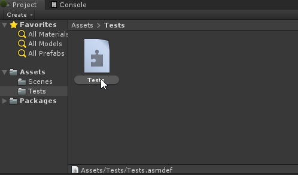
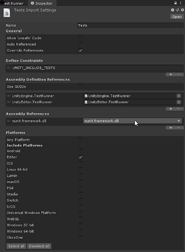

Workflow: How to create a new test assembly¶
Unity Test Framework looks for a test inside any assembly that references NUnit. We refer to such assemblies as TestAssemblies. The Test Runner UI can help you set up TestAssemblies. Play Mode and Edit Mode tests need to be in separate assemblies.
In the Test Runner window, you will see an EditMode tab enabled by default, as well as a Create EditMode Test Assembly Folder button.

Click the button to create a Tests folder with a respective .asmdef file by default. Change the name of the new Assembly Definition, if necessary, and press Enter to accept it.

In the Inspector window, it should have references to nunit.framework.dll*,* UnityEngine.TestRunner, and UnityEditor.TestRunner assemblies, as well as Editor preselected as a target platform.
Note: The UnityEditor.TestRunner reference is only available for Edit Mode tests.
